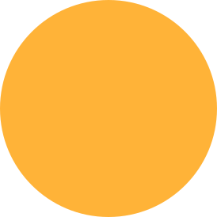
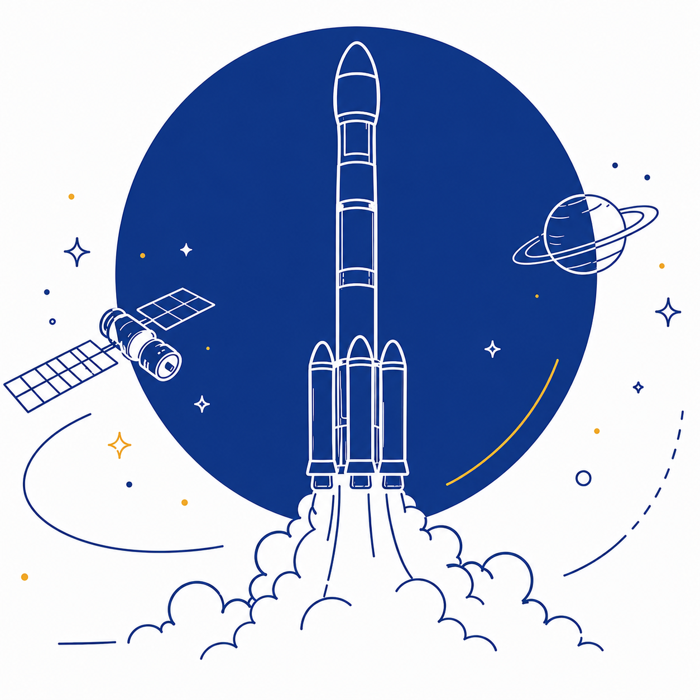
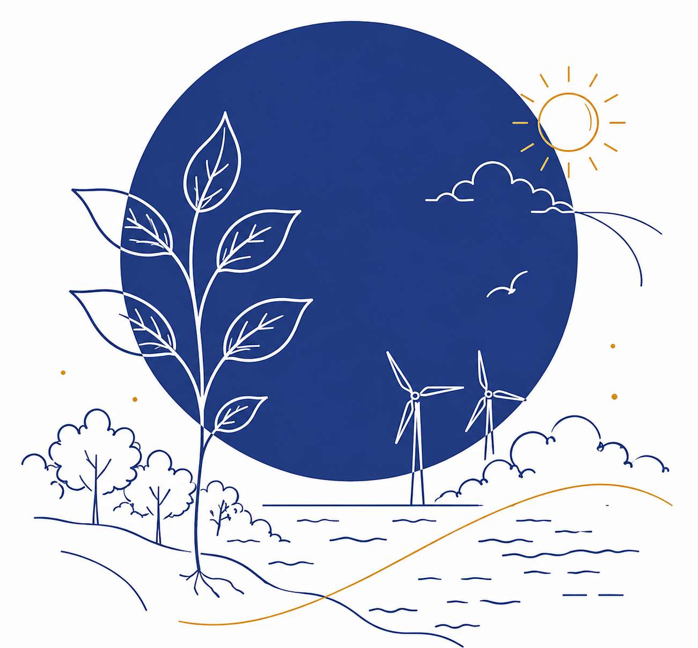
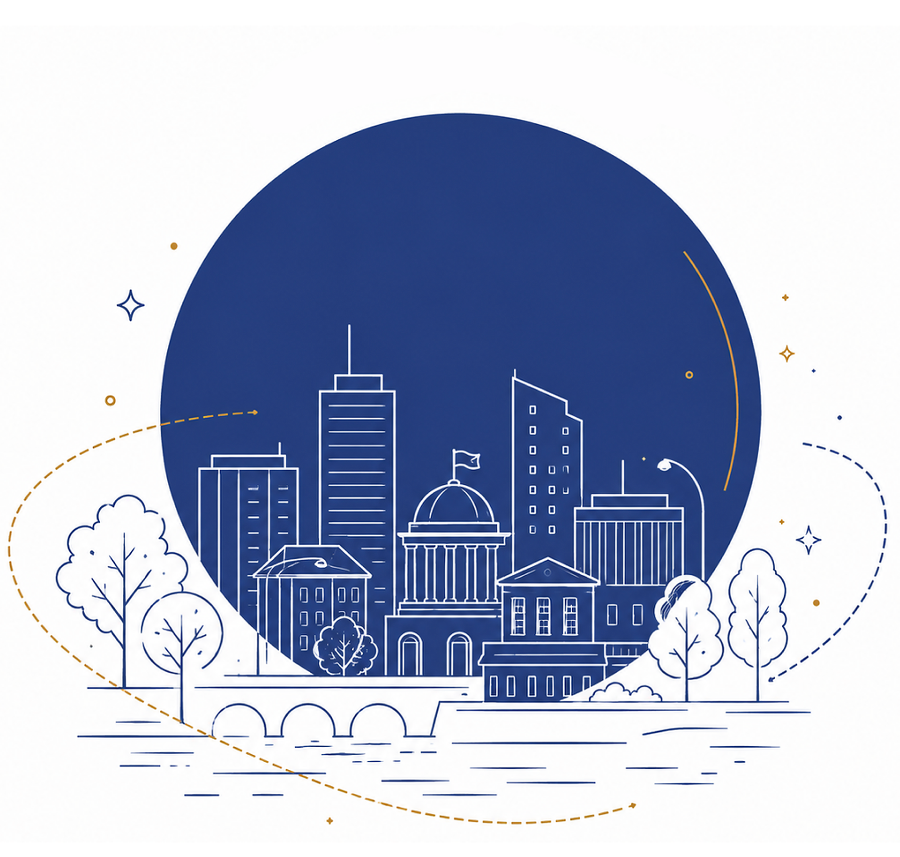
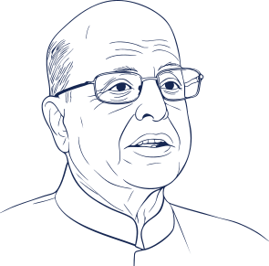
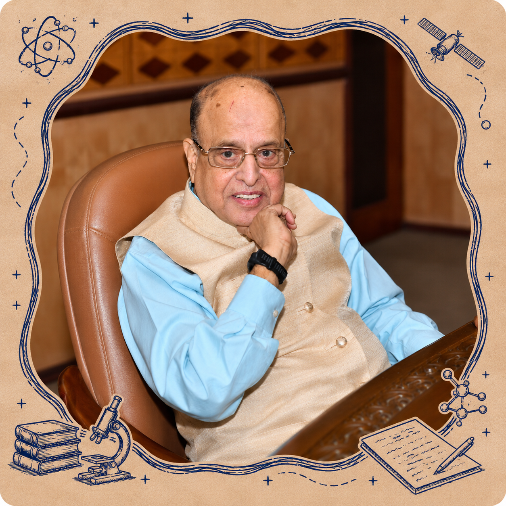
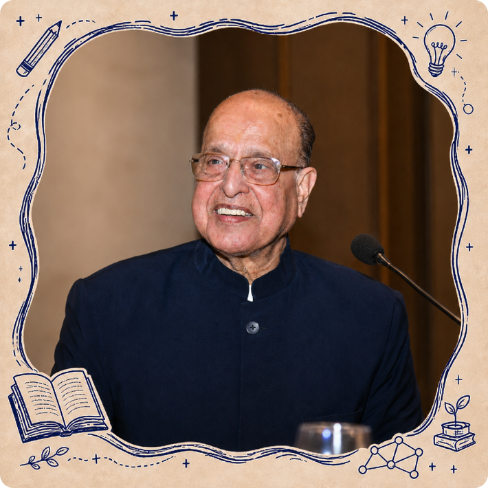
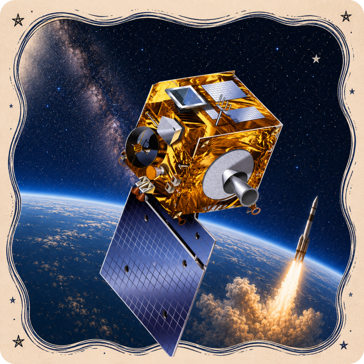
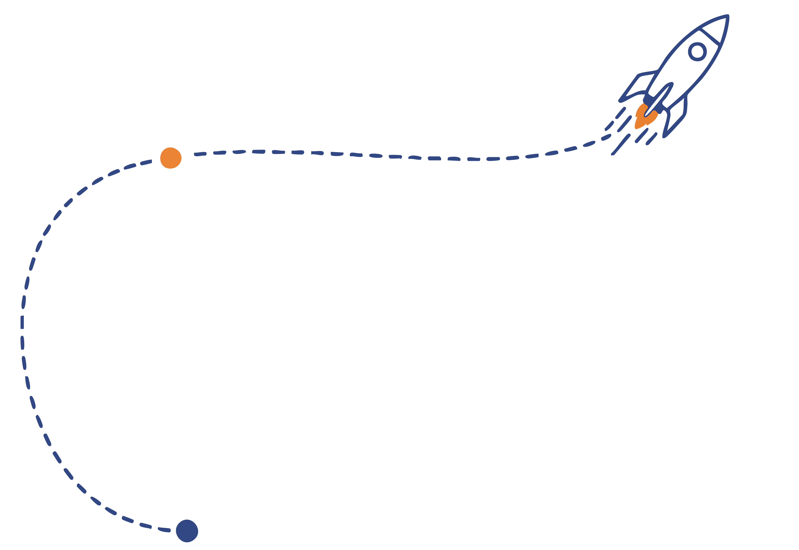

We award fellowships and research support to scholars working at the intersection of education, science, and society.
Explore Our Work ↗Krishnaswamy Kasturirangan (24 October 1940 – 25 April 2025) was one of India’s most distinguished space scientists and public intellectuals. Over a career spanning several decades, he played a pivotal role in advancing India’s space programme (ISRO), and later contributed significantly to national policy in education and environmental conservation.
In recognition of his contributions, he was awarded the Padma Shri, Padma Bhushan, and Padma Vibhushan. His life’s work reflects a rare blend of scientific excellence, institution-building, and public service.
The Dr Kasturirangan Trust was formed to keep alive his legacy, his spirit of innovation, interdisciplinary thinking, and commitment to national development through knowledge and education.




“Every phase of work must
contribute to a larger
national vision”



At crossroads — Berkeley or ISRO?
Unfamiliar terrains
Deep respect for fellow scientists

Cultivating Excellence. Futures Thinking. Advancing Humanity.